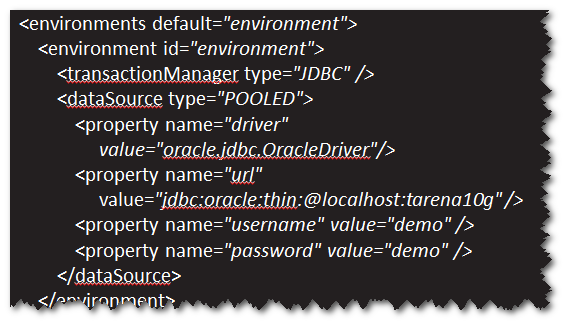
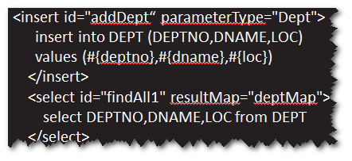

开源的持久层框架。
hibernate 可以不写sql 性能稍差 代码简洁 生成的sql难维护
mybatis 要写sql 性能良好 代码简洁
jdbc 要写sql 性能最好 代码麻烦
step1. 导包
mybatis.jar,jdbc driver.jar
step2. 添加配置文件。

注：配置文件里面主要包含两部分信息，一是数据库的连接参数，二是
映射文件的位置
step3. 实体类
注：实体类的属性名必须与表的字段名一致(名称相同，大小写无所谓)。
step4. 映射文件

注：记得将映射文件的位置添加到配置文件。
step5.利用mybatis提供的api来访问数据库。
练习:
使用mybatis完成部门表的增删改查操作。
create table dept(
id number(8) primary key,
deptName varchar2(20),
addr varchar2(50)
);
create sequence dept_seq;
对象里(字段名作为key,字段值作为value)。接下来，会将Map中
数据添加到对应的对象里面。
方式一: 用别名,比如
SELECT id empNo,ename name,age FROM emp
方式二：使用<resultMap>元素。

依据Mapper接口(DAO接口)自动生成对应的DAO。
step1. 写一个Mapper接口(DAO接口),该接口中的方法必须
与映射文件中的sql定义一致。
a. 方法名与sql的id一样。
b. 方法的参数类型与sql定义中的参数类型一致。
c. 方法的返回类型与sql定义中的返回类型一致。
step2. 修改映射文件，namespace必须等于Mapper接口的完整的名称。
step3. 调用SqlSession的getMapper方法。该方法会返回一个实现了
对应Mapper接口要求的对象。
练习:
使用Mapper映射器完成部门表的增删改查操作。